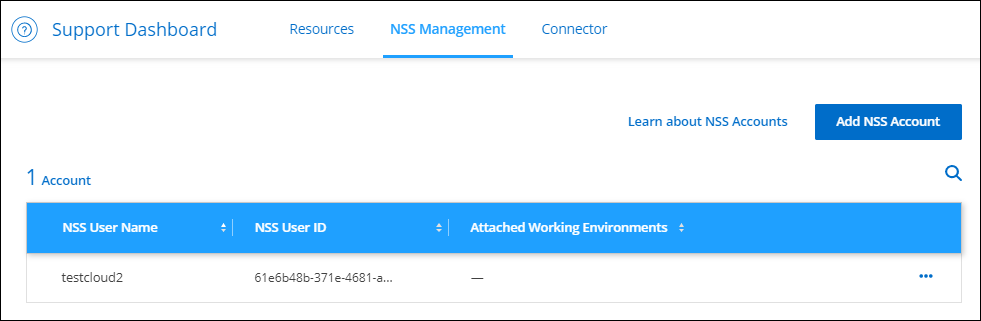

リリースノート
リリースノート
新機能
 変更を提案
変更を提案
BlueXPの管理機能の新機能（BlueXPアカウント、コネクタ、クラウドプロバイダのクレデンシャルなど）をご確認ください。
2024年3月26日
プライベートモードリリース（3.9.38）
BlueXPで新しいプライベートモードリリースが見積もり可能になりました。このリリースには、プライベートモードでサポートされる次のバージョンのBlueXPサービスが含まれています。
| サービス | 含まれるバージョン |
|---|---|
コネクタ |
3.9.38 |
バックアップとリカバリ |
2024年3月12日 |
分類 |
2024年3月4日 |
Cloud Volumes ONTAP管理 |
2024年3月8日 |
デジタルウォレット |
2023年7月30日 |
オンプレミスのONTAPクラスタ管理 |
2023年7月30日 |
レプリケーション |
2022年9月18日 |
この新しいリリースは、NetApp Support Siteからダウンロードできます。
2024年3月8日
コネクタ3.9.38
現時点では、3.9.38リリースは標準モードと制限モードで使用できます。このリリースでは、AWSでのIMDSv2とAWS権限の更新がサポートされます。
IMDSv2のサポート
BlueXPで、コネクタインスタンスとCloud Volumes ONTAPインスタンスでAmazon EC2インスタンスメタデータサービスバージョン2（IMDSv2）がサポートされるようになりました。IMDSv2では、脆弱性に対する保護が強化されています。以前はIMDSv1のみがサポートされていました。
インスタンスメタデータサービス（IMDS）は、EC2インスタンスで次のように有効になります。
-
BlueXP、AWS Marketplace、または "Terraformスクリプト"IMDSv2はEC2インスタンスでデフォルトで有効になっています。
-
AWSで新しいEC2インスタンスを起動し、コネクタソフトウェアを手動でインストールすると、IMDSv2もデフォルトで有効になります。
-
既存のコネクタについては、IMDSv1は引き続きサポートされますが、必要に応じて、EC2インスタンスでIMDSv2を手動で設定できます。
-
Cloud Volumes ONTAPでは、新規および既存のインスタンスでIMDSv1がデフォルトで有効になっています。必要に応じて、EC2インスタンスでIMDSv2を手動で設定できます。
AWS権限の更新
AWSのコネクタポリシーを更新して、「EC2：DescriptionAvailabilityZones」権限を追加しました。この権限は、今後のリリースで必要になります。リリースノートの詳細については、リリースノートを更新します。
プロキシ設定とCloud Volumes ONTAP設定
コネクターのプロキシサーバー設定は、*コネクターの管理*ページ（標準モード）または*コネクターの編集*ページ（制限モードおよびプライベートモード）から利用できるようになりました。
また、コネクター設定*ページの名前を Cloud Volumes ONTAP設定*に変更しました。
 メニューから使用できるCloud Volumes ONTAP Settings]オプションを示すスクリーンショット。"]
メニューから使用できるCloud Volumes ONTAP Settings]オプションを示すスクリーンショット。"]
2024年2月15日
コネクタ3.9.37
今回のリリースのBlueXP Connectorには、セキュリティが若干改善され、バグが修正されています。
現時点では、3.9.37リリースは標準モードと制限モードで使用できます。
名前の編集
NetAppのクラウドクレデンシャルを使用してBlueXPにログインすると、*[ユーザ設定]*で名前を編集できるようになりました。
 で名前を編集する機能を示すスクリーンショット。"]
で名前を編集する機能を示すスクリーンショット。"]
フェデレーテッド接続またはNetApp Support Siteアカウントでログインした場合、名前の編集はサポートされません。
2024年1月11日
コネクタ3.9.36
このリリースには、以下のクラウドリージョンでマイナーな改善、バグ修正、コネクタのサポートが含まれています。
-
AWSのイスラエル（テルアビブ）リージョン
-
Google Cloudのサウジアラビアリージョン
2023年12月5日
プライベートモードリリース（3.9.35）
BlueXPで新しいプライベートモードリリースが見積もり可能になりました。このリリースには、コネクタのバージョン3.9.35と、2023年10月時点でプライベートモードでサポートされるBlueXPサービスのバージョンが含まれています。
この新しいリリースは、NetApp Support Siteからダウンロードできます。
2023年11月8日
コネクタ3.9.35
このリリースには、セキュリティのマイナーな改善とバグの修正が含まれています。
2023年10月6日
コネクタ3.9.34
このリリースには、マイナーな改善とバグ修正が含まれています。
2023年9月10日
コネクタ3.9.33
-
BlueXPからAWSでコネクタを作成するときに、[Key Pair]フィールド内を検索して、コネクタインスタンスで使用するキーペアを簡単に見つけることができるようになりました。
 ページに表示される[Key Pair]フィールドの検索オプションのスクリーンショット。"]
ページに表示される[Key Pair]フィールドの検索オプションのスクリーンショット。"] -
このアップデートにはバグ修正も含まれています。
2023年7月30日
コネクタ3.9.32
-
BlueXP監査サービスAPIを使用して監査ログをエクスポートできるようになりました。
監査サービスには、BlueXPサービスで実行された処理に関する情報が記録されます。これには、ワークスペース、使用されているコネクタ、およびその他のテレメトリデータが含まれます。このデータを使用して、実行されたアクション、実行者、実行日時を確認できます。
このリンクには、BlueXPのユーザインターフェイスの[Timeline]ページからもアクセスできます。
-
このリリースのコネクタには、Cloud Volumes ONTAP の機能拡張とオンプレミスONTAP クラスタの機能拡張も含まれています。
2023年7月2日
コネクタ3.9.31
-
[My estate]タブ（以前の[My Opportunities]）でオンプレミスのONTAPクラスタを検出できるようになりました。
"クラスタを検出する方法については、[My estateページを参照してください"]。
-
Azure Governmentリージョンでコネクタを使用している場合は、コネクタが次のエンドポイントに接続できることを確認する必要があります。
https://occmclientinfragov.azurecr.us
このエンドポイントは、コネクタを手動でインストールし、コネクタとそのDockerコンポーネントをアップグレードするために必要です。
この変更により、Azure Governmentリージョン内のコネクタは、次のエンドポイントに接続しなくなりました。
https://cloudmanagerinfraprod.azurecr.io
このエンドポイントは、他のすべての制限モード設定および標準モードでは引き続き必要であることに注意してください。
2023年6月4日
コネクタ3.9.30
-
サポートダッシュボードからNetAppサポートケースをオープンすると、BlueXPログインに関連付けられたNetApp Support Siteアカウントを使用してケースがオープンされるようになりました。以前は、BlueXPアカウント全体に関連付けられたNetApp Support Siteアカウントを使用していました。
この変更に伴い、BlueXPアカウントのサポート登録は、ユーザのBlueXPログインに関連付けられたNetApp Support Siteアカウントを使用して行われるようになりました。これまで、サポートの登録には、BlueXPアカウント全体に関連付けられたNSSアカウントを使用していました。そのため、BlueXPへのログインにNetApp Support Siteアカウントが関連付けられていない場合、他のBlueXPユーザには同じサポート登録ステータスが表示されません。以前にBlueXPアカウントをサポートに登録していても、登録ステータスは引き続き有効です。ステータスを確認するには、ユーザレベルのNSSアカウントを追加するだけです。
-
BlueXPからドキュメントを検索できるようになりました。検索結果に、docs.netapp.comおよびkb.netapp.comのコンテンツへのリンクが表示されるようになりました。これは、質問を回答に送信するのに役立つ可能性があります。

-
コネクタを使用して、BlueXPからAzureストレージアカウントを追加および管理できるようになりました。
-
このコネクタが次のAWSリージョンでサポートされるようになりました。
-
ハイデラバード（AP-south-2）
-
メルボルン（AP南東-4）
-
スペイン（EU-south-2）
-
アラブ首長国連邦（ME-CENTRAL-1）
-
チューリッヒ（EU-CENTRAL-2）
-
-
このコネクタは、次のAzureリージョンでサポートされるようになりました。
-
ブラジル南部
-
フランス南部
-
インド中部出身
-
西インド諸島出身
-
ポーランド中部
-
カタール中部
-
-
Connectorは、次のGoogle Cloudリージョンでサポートされるようになりました。
-
コロンバス（us-east5）
-
ダラス（US -サウス1）
-
2023年5月7日
コネクタ3.9.29
-
Ubuntu 22.04は、BlueXPまたはクラウドプロバイダのマーケットプレイスからコネクタを導入する際のコネクタ用の新しいオペレーティングシステムです。
また、Ubuntu 22.04を実行している独自のLinuxホストにコネクタを手動でインストールすることもできます。
-
Red Hat Enterprise Linux 8.6および8.7は、新しいコネクタの導入ではサポートされなくなりました。
Red Hatではコネクタに必要なDockerがサポートされなくなるため、新しい環境ではこれらのバージョンはサポートされません。RHEL 8.6または8.7で既存のコネクタを実行している場合、ネットアップは引き続きこの構成をサポートします。
Red Hat 7.6、7.7、7.8、および7.9は、新規および既存のコネクタで引き続きサポートされます。
-
コネクタは現在、Google Cloudのカタール地域でサポートされています。
-
このコネクタは、Microsoft AzureのSweden Centralリージョンでもサポートされています。
-
このリリースのコネクタには、Cloud Volumes ONTAP の機能拡張が含まれています。
2023年4月4日
展開モード
BlueXP_deployment modes_を使用すると、ビジネス要件やセキュリティ要件に合わせてBlueXPを使用できます。次の3つのモードから選択できます。
-
標準モード
-
制限モード
-
プライベートモード

|
制限モードが導入されたことで、SaaSプラットフォームを有効または無効にするオプションが廃止されました。制限モードはアカウント作成時に有効にすることができます。後で有効または無効にすることはできません。 |
2023年4月3日
コネクタ3.9.28
-
Eメール通知がBlueXPデジタルウォレットでサポートされるようになりました。
通知を設定すると、BYOLライセンスの有効期限が近づいたとき（「警告」通知）、またはすでに有効期限が切れているとき（「エラー」通知）にEメール通知を受け取ることができます。
-
Google Cloud Turinリージョンでコネクタがサポートされるようになりました。
-
BlueXPログインに関連付けられたユーザクレデンシャル（ONTAP クレデンシャルとNetApp Support Site （NSS）クレデンシャル）を管理できるようになりました。
[設定]>[クレデンシャル]*に移動すると、クレデンシャルを表示したり、更新したり、削除したりできます。たとえば、これらのクレデンシャルのパスワードを変更した場合は、BlueXPでパスワードを更新する必要があります。
-
サポートケースを作成するとき、または既存のサポートケースのケースノートを更新するときに、添付ファイルをアップロードできるようになりました。
-
このリリースのコネクタには、Cloud Volumes ONTAP の機能拡張とオンプレミスONTAP クラスタの機能拡張も含まれています。
2023年3月5日
コネクタ3.9.27
-
BlueXPコンソールで検索できるようになりました。この時点で、検索機能を使用してBlueXPのサービスと機能を検索できます。

-
アクティブなサポートケースと解決済みのサポートケースは、BlueXPから直接表示および管理できます。NSSアカウントと会社に関連付けられたケースを管理できます。
-
このコネクタは、インターネットから完全に分離されたクラウド環境でサポートされるようになりました。その後、コネクタで実行されているBlueXPコンソールを使用して、同じ場所にCloud Volumes ONTAP を導入し、オンプレミスのONTAP クラスタを検出できます（クラウド環境からオンプレミス環境に接続されている場合）。BlueXPのバックアップとリカバリを使用して、AWSとAzureのコマーシャルリージョンのCloud Volumes ONTAP ボリュームをバックアップすることもできます。このタイプの環境では、BlueXPデジタルウォレットを除き、他のBlueXPサービスはサポートされません。
クラウドリージョンは、AWS Top Secret Cloud、AWS Secret Cloud、Azure IL6、または任意の商用リージョンのような米国の安全な機関のリージョンにすることができます。
開始するには、コネクタソフトウェアを手動でインストールし、コネクタで実行されているBlueXPコンソールにログインし、BlueXPデジタルウォレットにBYOLライセンスを追加してから、Cloud Volumes ONTAP を導入します。
-
このコネクタで、BlueXPからAmazon S3バケットを追加および管理できるようになりました。
-
このリリースのコネクタには、Cloud Volumes ONTAP の機能拡張が含まれています。
2023年2月5日
コネクタ3.9.26
-
ログイン*ページで、ログインに関連付けられたメールアドレスを入力するように求められます。[次へ]*を選択すると、ログインに関連付けられている認証方式を使用して認証するよう求められます。
-
ネットアップクラウドクレデンシャルのパスワード
-
フェデレーテッドアイデンティティのクレデンシャル
-
NetApp Support Site クレデンシャルが必要です

-
-
BlueXPを初めて使用していて、既存のNetApp Support Site (NSS)の資格情報がある場合は、サインアップページをスキップして、ログインページに電子メールアドレスを直接入力できます。この初回ログインの一環として、BlueXPがサインアップします。
-
クラウドプロバイダのマーケットプレイスからBlueXPに登録すると、1つのアカウントの既存のサブスクリプションを新しいサブスクリプションに置き換えることができます。

-
BlueXPは、コネクタの電源が14日以上切れている場合に通知します。
-
Google Cloudのコネクタポリシーを更新し、Cloud Volumes ONTAP HAペアでStorage VMを作成および管理するために必要な権限を追加しました。
compute.instances.updateNetworkInterface
-
このリリースのコネクタには、Cloud Volumes ONTAP の機能拡張が含まれています。
2023年1月1日
コネクタ3.9.25
このリリースのコネクタには、Cloud Volumes ONTAP の機能拡張とバグ修正が含まれています。
2022年12月4日
コネクタ3.9.24
-
BlueXPコンソールのURLがに更新されました https://console.bluexp.netapp.com
-
ConnectorはGoogle Cloudイスラエル地域でサポートされるようになりました。
-
このリリースのコネクタには、Cloud Volumes ONTAP の機能拡張とオンプレミスONTAP クラスタの機能拡張も含まれています。
2022年11月6日
コネクタ3.9.23
-
BlueXPのPAYGOサブスクリプションと年間契約が、デジタルウォレットで表示、管理できるようになりました。
-
このリリースのコネクタには、Cloud Volumes ONTAP の機能拡張も含まれています。
2022年11月1日
BlueXPの導入
NetApp BlueXPは、Cloud Managerを通じて提供される機能を拡張、強化します。BlueXPは、オンプレミス環境とクラウド環境のストレージとデータサービスにハイブリッドマルチクラウド環境を提供する統合コントロールプレーンです。
- 統合された管理エクスペリエンス
-
BlueXPを使用すると'すべてのストレージおよびデータ資産を1つのインタフェースから管理できます
BlueXPを使用して、クラウドストレージ（Cloud Volumes ONTAP やAzure NetApp Files など）の作成と管理、データの移動、保護、分析、オンプレミスやエッジの多くのストレージデバイスの管理を行うことができます。
- 新しいナビゲーションメニュー
-
BlueXPのナビゲーションメニューでは、サービスがカテゴリ別に分類され、機能に応じてサービスの名前が付けられます。たとえば、BlueXPのバックアップとリカバリには*[保護]*カテゴリからアクセスできます。

- 新しい製品統合
-
-
コネクタがインストールされているAWSアカウントでAmazon S3バケットを管理できるようになりました。
-
EシリーズやStorageGRID など、オンプレミスのストレージシステムをさらに管理できるようになりました。
-
これまでスタンドアロンサービスとしてしか提供されていなかったデータサービスを、別のUIで使用できるようになりました。たとえば、BlueXP Digital Advisor（Active IQ ）などです。
-
- 詳細はこちら。
NSSクレデンシャルの更新を求めるプロンプト
アカウントに関連付けられた更新トークンが3カ月後に期限切れになると、Cloud ManagerはNetApp Support Site アカウントに関連付けられたクレデンシャルの更新を求めます。 "NSS アカウントを管理する方法について説明します"
2022年9月18日
コネクタ3.9.22
-
Connectorのインストールウィザードを強化しました。このウィザードには、Connectorのインストールに関する最小要件（権限、認証、ネットワーク）を満たすための手順が記載されています。
-
ネットアップサポートケースをCloud Managerのサポートダッシュボードで直接作成できるようになりました。
-
このリリースのコネクタには、Cloud Volumes ONTAP の機能拡張も含まれています。
2022年7月31日
コネクタ3.9.21
-
Cloud Managerでまだ管理していない既存のクラウドリソースを検出する新しい方法が導入されました。
Canvasでは、* My Opportunities *タブを使用して、ハイブリッドマルチクラウド全体で一貫したデータサービスと運用を実現するために、Cloud Managerに追加できる既存のリソースを一元的に検出できます。
この初回リリースでは、My Opportunitiesを使用して、AWSアカウント内のONTAP ファイルシステム用の既存のFSXを検出できます。
-
このリリースのコネクタには、Cloud Volumes ONTAP の機能拡張も含まれています。
2022年7月15日
ポリシーの変更
ドキュメントを更新するには、Cloud Managerのポリシーをドキュメント内に直接追加します。これにより、コネクタとCloud Volumes ONTAP に必要な権限を、設定方法を説明する手順とともに表示できるようになりました。これらのポリシーには、NetApp Support Siteのページからアクセスできます。
また、各ポリシーへのリンクを提供するページも作成しました。 "Cloud Managerの権限の概要を確認します"。
2022年7月3日
コネクタ3.9.20
-
拡大する機能のリストへの新しいナビゲート方法が導入されました。左側のパネルにカーソルを合わせると、使い慣れたCloud Managerの機能を簡単に確認できます。

-
Cloud ManagerからEメールで通知を送信するように設定できるようになりました。これにより、システムにログインしていないときでも重要なシステムアクティビティを通知できます。
-
Cloud Managerでは、Amazon S3のサポートと同様に、Azure Blob StorageとGoogle Cloud Storageが作業環境としてサポートされるようになりました。
AzureまたはGoogle Cloudにコネクタをインストールすると、Connectorがインストールされているプロジェクトで、AzureサブスクリプションまたはGoogle Cloud StorageのAzure Blob Storageに関する情報がCloud Managerで自動的に検出されるようになりました。Cloud Managerにはオブジェクトストレージが作業環境として表示され、この環境を開いて詳細情報を確認することができます。
Azure Blob作業環境の例は次のとおりです。

-
容量や暗号化の詳細など、S3バケットに関する詳細情報を提供することで、Amazon S3作業環境用のリソースページが再設計されました。
-
Connectorは、次のGoogle Cloudリージョンでサポートされるようになりました。
-
マドリード（ヨーロッパ-南西部1）
-
パリ（ヨーロッパ-西9区）
-
ワルシャワ（ヨーロッパ中央部2）
-
-
Azure West US 3リージョンでコネクタがサポートされるようになりました。
-
このリリースのコネクタには、Cloud Volumes ONTAP の機能拡張も含まれています。
2022年6月28日
ネットアップのクレデンシャルでログインします
新規ユーザがCloud Centralに登録する際に、「ネットアップでログイン」オプションを選択して、NetApp Support Siteのクレデンシャルを使用してログインできるようになりました。Eメールアドレスとパスワードを入力する代わりに使用できます。
|
|
Eメールアドレスとパスワードを使用する既存のログインでは、このログイン方法を使用し続ける必要があります。ネットアップでログインするオプションは、新規ユーザがサインアップする際に使用できます。 |
2022年6月7日
コネクタ3.9.19
-
このコネクタは、AWSジャカルタリージョン（AP-Southee-3）でサポートされるようになりました。
-
このコネクタは、Azureブラジル南東部でサポートされるようになりました。
-
このリリースのコネクタには、Cloud Volumes ONTAP の機能拡張とオンプレミスONTAP クラスタの機能拡張も含まれています。
2022年5月12日
コネクタ3.9.18パッチ
コネクタを更新し、バグ修正を実施しました。最も注目すべき解決策は、問題 が共有VPC内にある場合にGoogle CloudでのCloud Volumes ONTAP の導入に影響するというものです。
2022年5月2日
コネクタ3.9.18
-
Connectorは、次のGoogle Cloudリージョンでサポートされるようになりました。
-
デリー（アジア-サウス2）
-
メルボルン（オーストラリア-スモアカス2）
-
ミラノ（ヨーロッパ-西8）
-
サンティアゴ（サウスメリカ-西1）
-
-
Connectorで使用するGoogle Cloudサービスアカウントを選択すると、Cloud Managerに各サービスアカウントに関連付けられているEメールアドレスが表示されるようになりました。メールアドレスを表示すると、同じ名前を共有するサービスアカウントを区別しやすくなります。

-
をサポートするOSでVMインスタンス上のGoogle CloudのConnectorを認定しました "シールドVM機能"
-
このリリースのコネクタには、Cloud Volumes ONTAP の機能拡張も含まれています。 "これらの拡張機能について説明します"
-
ConnectorでCloud Volumes ONTAP を導入するには、新しいAWS権限が必要です。
単一のAvailability Zone（AZ；アベイラビリティゾーン）にHAペアを導入する際にAWS分散配置グループを作成するためには、次の権限が必要です。
"ec2:DescribePlacementGroups", "iam:GetRolePolicy",これらの権限は、Cloud Managerによる配置グループの作成方法を最適化するために必要になります。
Cloud Managerに追加したAWSクレデンシャルの各セットに、これらの権限を必ず付与してください。 "コネクタの最新のIAMポリシーを確認します"。
2022年4月3日
コネクタ3.9.17
-
Cloud Manager に、環境で設定した IAM ロールを割り当てることでコネクタを作成できるようになりました。この認証方式は、 AWS のアクセスキーとシークレットキーを共有する場合よりも安全です。
-
このリリースのコネクタには、Cloud Volumes ONTAP の機能拡張も含まれています。 "これらの拡張機能について説明します"
(2022年2月27日).
コネクタ3.9.16
-
Google Cloud で新しいコネクタを作成すると、 Cloud Manager に既存のすべてのファイアウォールポリシーが表示されるようになります。以前は、 Cloud Manager にはターゲットタグがないポリシーは表示されませんでした。
-
このリリースのコネクタには、Cloud Volumes ONTAP の機能拡張も含まれています。 "これらの拡張機能について説明します"
(2022年1月30日).
コネクタ3.9.15
このリリースのコネクタには、Cloud Volumes ONTAP の機能拡張が含まれています。 "これらの拡張機能について説明します"
2022年1月2日
コネクタのエンドポイントが減少しました
パブリッククラウド環境内でリソースやプロセスを管理するためにコネクタが接続する必要があるエンドポイントの数を削減しました。
コネクタの EBS ディスク暗号化
Cloud Manager から AWS に新しいコネクタを導入する際に、デフォルトのマスターキーまたは管理対象キーを使用してコネクタの EBS ディスクを暗号化できるようになりました。

NSS アカウントの E メールアドレス
Cloud Manager に、NetApp Support Siteのアカウントに関連付けられている E メールアドレスが表示されるようになりました。

(2021年11月28日).
NetApp Support Siteのアカウントを更新する必要があります
2021 年 12 月以降、ネットアップは、サポートとライセンスに固有の認証サービスのアイデンティティプロバイダとして Microsoft Azure Active Directory を使用するようになりました。この更新によって、 Cloud Manager は、以前に追加した既存のNetApp Support Siteのアカウントのクレデンシャルの更新を求めます。
NSS アカウントを IDaaS に移行していない場合は、まずアカウントを移行してから、 Cloud Manager でクレデンシャルを更新する必要があります。
Cloud Volumes ONTAP の NSS アカウントを変更します
組織内に複数のNetApp Support Siteのアカウントがある場合、 Cloud Volumes ONTAP システムに関連付けられているアカウントを変更できるようになりました。
(2021年11月4日).
SOC 2 Type 2 認定
独立機関の公認会計士であり、サービス監査役は、 Cloud Manager 、 Cloud Sync 、 Cloud Tiering 、 Cloud Data Sense 、 Cloud Backup （ Cloud Manager プラットフォーム）を調査し、該当する信頼サービス基準に基づいて SOC 2 Type 2 のレポートを達成したことを確認しました。
コネクタはプロキシとしてサポートされなくなりました
AutoSupport から Cloud Volumes ONTAP メッセージを送信するためのプロキシサーバとして Cloud Manager Connector を使用することはできなくなりました。この機能は削除され、サポートも終了しています。AutoSupport 接続は、 NAT インスタンスまたは環境のプロキシサービスを介して提供する必要があります。
2021年10月31日閲覧
サービスプリンシパルを使用した認証
Microsoft Azure で新しいコネクタを作成する際、 Azure アカウントのクレデンシャルではなく Azure サービスプリンシパルで認証できるようになりました。
クレデンシャルの機能拡張
クレデンシャルページのデザインを見直し、使いやすく、 Cloud Manager のインターフェイスの外観に合わせて刷新しました。
2021年9月2日
新しい通知サービスが追加されました
通知サービスが導入され、現在のログインセッションで開始した Cloud Manager の処理のステータスを表示できるようになりました。処理が成功したかどうか、または失敗したかどうかを確認できます。 "アカウントの操作を監視する方法については、を参照してください"。
2021 年 7 月 7 日
コネクタの追加ウィザードの機能拡張
新しいオプションを追加して使いやすくするために、 * コネクターの追加 * ウィザードを再設計しました。タグの追加、ロール（ AWS または Azure ）の指定、プロキシサーバのルート証明書のアップロード、 Terraform Automation のコードの表示、進捗状況の詳細の表示などが可能になりました。
NSS アカウントの管理をサポートダッシュボードから行うこともできます
NetApp Support Site（ NSS ）アカウントは、設定メニューではなくサポートダッシュボードで管理できるようになりました。この変更により、すべてのサポート関連情報を 1 箇所から簡単に検索して管理できるようになります。

2021 年 5 月 5 日
タイムラインのアカウント
Cloud Manager のタイムラインに、アカウント管理に関連する操作とイベントが表示されるようになりました。アクションには、ユーザーの関連付け、ワークスペースの作成、コネクタの作成などがあります。タイムラインのチェックは、特定のアクションを実行したユーザーを特定する必要がある場合や、アクションのステータスを特定する必要がある場合に役立ちます。
(2021年4月11日).
Cloud Manager に直接 API で呼び出します
プロキシサーバを設定している場合、プロキシを経由せずに Cloud Manager に API 呼び出しを直接送信するオプションを有効にできるようになりました。このオプションは、 AWS または Google Cloud で実行されているコネクタでサポートされます。
サービスアカウントユーザ
サービスアカウントユーザを作成できるようになりました。
サービスアカウントは「ユーザ」の役割を果たし、 Cloud Manager に対して自動化のための許可された API 呼び出しを実行できます。これにより、自動化スクリプトを作成する必要がなくなります。自動化スクリプトは、会社を離れることができる実際のユーザアカウントに基づいて作成する必要がなくなります。フェデレーションを使用している場合は、クラウドから更新トークンを生成することなくトークンを作成できます。
プライベートプレビュー
アカウントのプライベートプレビューで、新しい NetApp クラウドサービスが Cloud Manager のプレビューとして利用できるようになりました。
サードパーティのサービス
また、アカウント内のサードパーティサービスが Cloud Manager で使用可能なサードパーティサービスにアクセスできるようにすることもできます。
2021年3月8日
このアップデートには、いくつかの機能とサービスの機能強化が含まれています。
Cloud Volumes ONTAP の機能拡張
このリリースの Cloud Manager では、 Cloud Volumes ONTAP の管理が強化されています。
すべてのクラウドプロバイダで利用できる機能強化
Cloud Volumes ONTAP 9.9.9..0 を導入および管理できるようになりました。
AWS で利用できる機能拡張
-
クラウドサービス 9.8 を AWS Commercial Cloud Volumes ONTAP （ C2S ）環境に導入できるようになりました。
-
Cloud Manager では、 AWS Key Management Service （ KMS ）を使用して Cloud Volumes ONTAP データを暗号化できるようになりました。Cloud Volumes ONTAP 9.9.9..0 以降では、お客様が管理する CMK を選択すると、 EBS ディスク上のデータと S3 に階層化されたデータが暗号化されます。これまでは、 EBS データだけが暗号化されていました。
Cloud Volumes ONTAP IAM ロールに CMK を使用するためのアクセス権を付与する必要があります。
Azure で利用できる機能拡張
Cloud Volumes ONTAP 9.8 を、国防総省（ DoD ）の影響レベル 6 （ IL6 ）に導入できるようになりました。
Google Cloud で利用可能な機能強化
-
Google Cloud で Cloud Volumes ONTAP 9.8 以降に必要な IP アドレスの数が削減されました。デフォルトでは、 IP アドレスを 1 つ減らす必要があります（インタークラスタ LIF をノード管理 LIF と統合しました）。また、 API を使用する場合は SVM 管理 LIF の作成を省略でき、追加の IP アドレスが不要になります。
-
Google Cloud で Cloud Volumes ONTAP HA ペアを導入する際に、 VPC -1 、 VPC -2 、および VPC -3 の共有 VPC を選択できるようになりました。以前は、 VPC を共有できるのは VPC のみでした。この変更は Cloud Volumes ONTAP 9.8 以降でサポートされています。
コネクタの機能拡張
-
Connector が実行されていない場合に、 Cloud Manager から管理者ユーザに E メールで通知されるようになりました。
コネクタを常時稼働させておくと、 Cloud Volumes ONTAP やその他の NetApp クラウドサービスを最大限に管理するのに役立ちます。
-
コネクタのインスタンスタイプを変更する必要がある場合に、 Cloud Manager に通知が表示されるようになりました。
インスタンスタイプを変更することで、現在利用できない新しい機能を確実に使用できます。
Cloud Sync の機能拡張
-
Cloud Sync で ONTAP S3 ストレージと SMB サーバの同期関係がサポートされるようになりました。
-
ONTAP S3 ストレージから SMB サーバへの移動
-
SMB サーバから ONTAP S3 ストレージ
-
-
Cloud Sync では、ユーザインターフェイスからデータブローカーグループの設定を直接統合できるようになりました。
自分で設定を変更することはお勧めしません。設定を変更するタイミングと変更方法については、ネットアップに相談してください。
Cloud Tiering の機能拡張
-
Google Cloud Storage に階層化する場合は、ライフサイクルルールを適用して、階層化されたデータを Standard ストレージクラスから 30 日後に低コストの Nearline 、 Coldline 、または Archive ストレージに移行することができます。
-
Cloud Tiering Now は、オンプレミスの ONTAP クラスタで検出されていないものがある場合に表示されます。これにより、クラスタへの階層化やその他のサービスを有効にすることができます。
Azure NetApp Files の機能拡張
ワークロードのニーズを満たし、コストを最適化するために、ボリュームのサービスレベルを動的に変更できるようになりました。ボリュームは、ボリュームに影響を及ぼすことなく、もう一方の容量プールに移動されます。 "詳細はこちら。"
(2021年2月9日).
サポートダッシュボードの強化
サポートダッシュボードが更新され、NetApp Support Siteのクレデンシャルを追加できるようになりました。このクレデンシャルをサポートに登録してください。ネットアップサポートケースは、ダッシュボードから直接開始することもできます。[ ヘルプ ] アイコンをクリックして、 [Support] をクリックします。